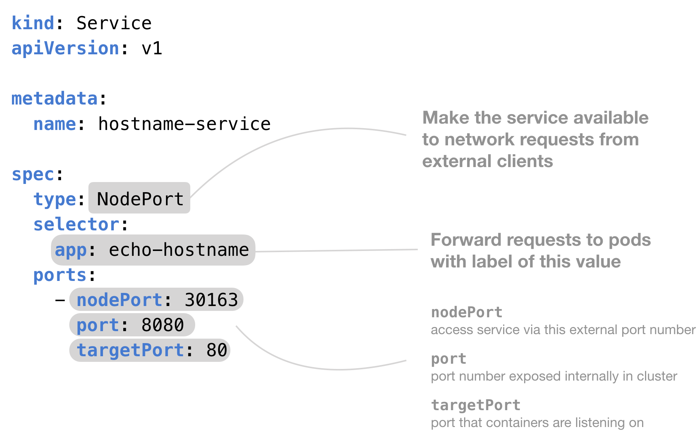

Service - Kubernetes Guide with Examples
What is a Service in Kubernetes?
A Service enables network access to a set of Pods in Kubernetes.
Services select Pods based on their labels. When a network request is made to the service, it selects all Pods in the cluster matching the service's selector, chooses one of them, and forwards the network request to it.

Kubernetes Service vs Deployment
What's the difference between a Service and a Deployment in Kubernetes?
A deployment is responsible for keeping a set of pods running.
A service is responsible for enabling network access to a set of pods.
We could use a deployment without a service to keep a set of identical pods running in the Kubernetes cluster. The deployment could be scaled up and down and pods could be replicated. Each pod could be accessed individually via direct network requests (rather than abstracting them behind a service), but keeping track of this for a lot of pods is difficult.
We could also use a service without a deployment. We'd need to create each pod individually (rather than "all-at-once" like a deployment). Then our service could route network requests to those pods via selecting them based on their labels.
Services and Deployments are different, but they work together nicely.
Kubernetes Service NodePort Example YAML
This example YAML creates a Service that is available to external network requests. We’ve specified the NodePort value so that the service is allocated to that port on each Node in the cluster.

And here's some example YAML code that shows you how to use a NodePort service in Kubernetes.
What does ClusterIP, NodePort, and LoadBalancer mean?
The type property in the Service's spec determines how the service is exposed to the network. It changes where a Service is able to be accessed from. The possible types are ClusterIP, NodePort, and LoadBalancer
ClusterIP– The default value. The service is only accessible from within the Kubernetes cluster – you can’t make requests to your Pods from outside the cluster!NodePort– This makes the service accessible on a static port on each Node in the cluster. This means that the service can handle requests that originate from outside the cluster.LoadBalancer– The service becomes accessible externally through a cloud provider's load balancer functionality. GCP, AWS, Azure, and OpenStack offer this functionality. The cloud provider will create a load balancer, which then automatically routes requests to your Kubernetes Service
Need More Details?
You can find a more detailed explanation of Services, a complete guided tutorial, more diagrams and reference information in my Kubernetes book. If you’ve found this article helpful, you’re gonna love the book.